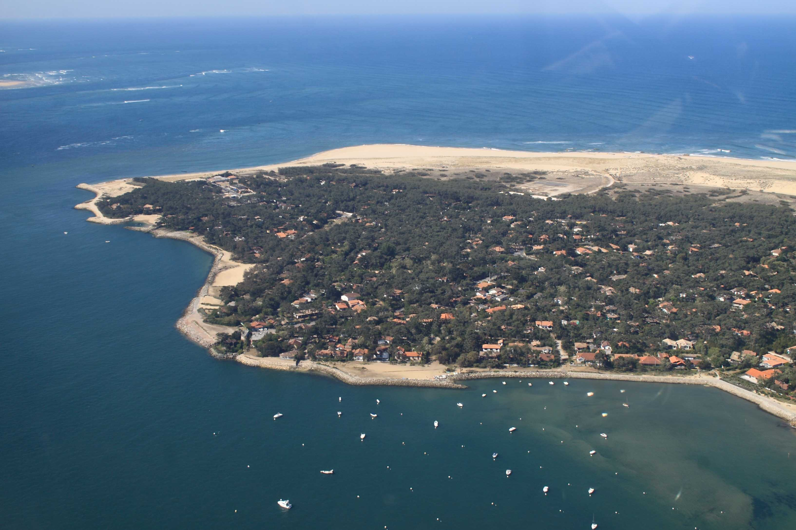

Le Cap Ferret:

Cliquez sur ce lien pour retrouver la localisation du Cap Ferret !Situé au nord du bassin d’Arcachon (Gironde), le Cap Ferret offre 25 kilomètres de côte et de plages de sable. Ce sont autant d’endroits où venir avec sa planche. La presqu’île du Cap Ferret offre ses meilleures vagues le long de la Côte d’Argent. Montez en haut des dunes et cherchez le meilleur banc de sable. Le spot du Grand Crohot est le plus connu des bordelais et le plus fréquenté. En recherche d’autres spots moins bondés ? Le Truc Vert en été et la plage de l’Horizon en hiver sont autant d’endroits où surfer toute l’année. Attention, car le courant peut être important et la foule nombreuse.
Donner un avis
Consulter les avis